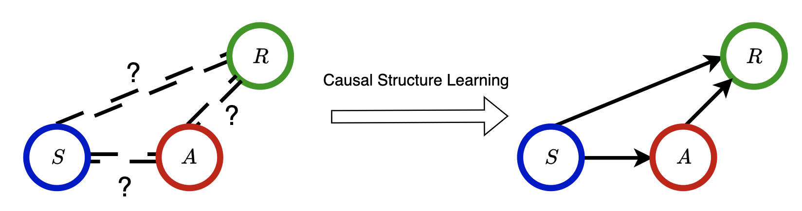
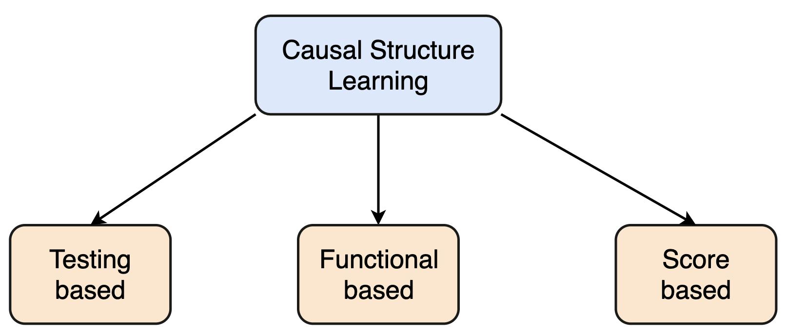
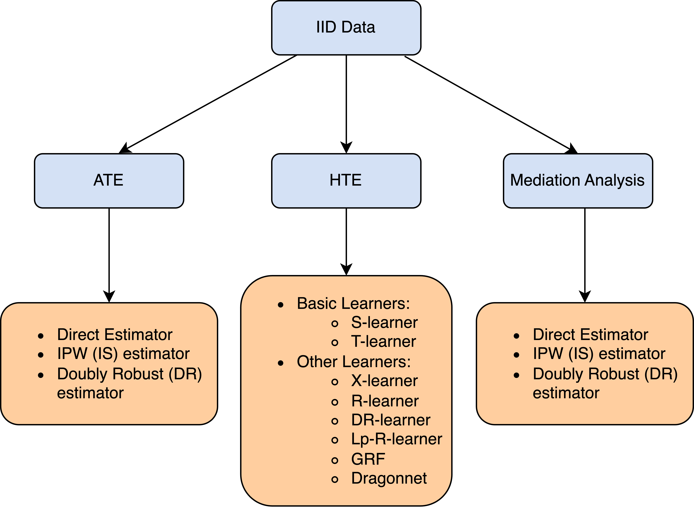
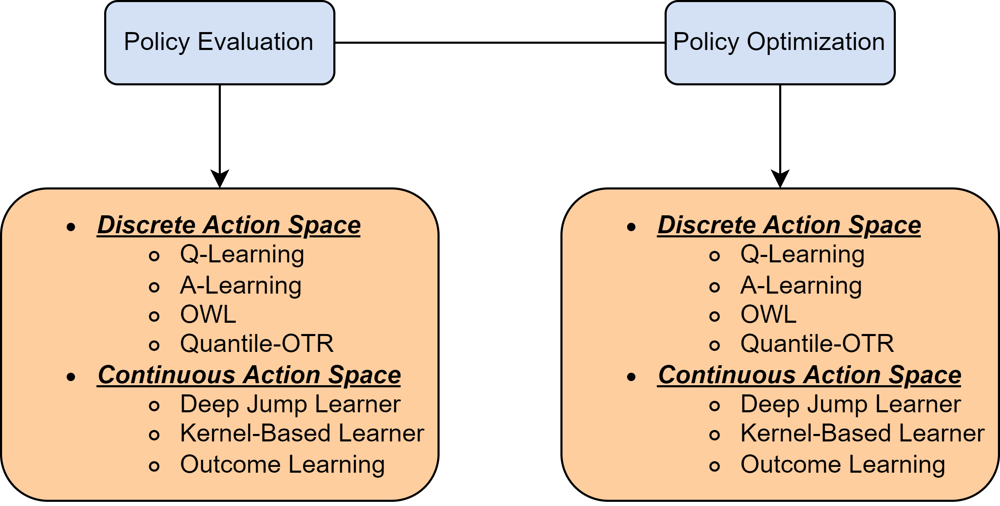
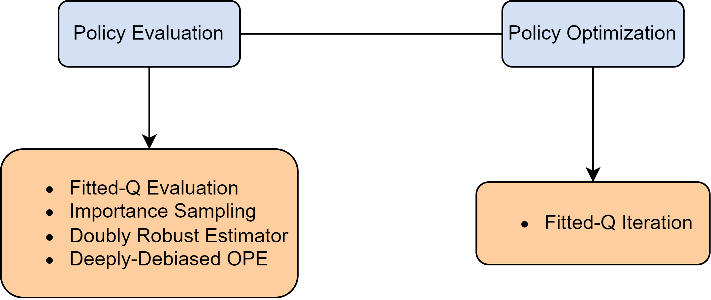
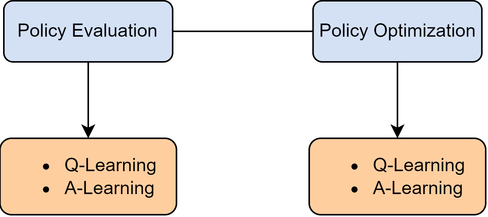
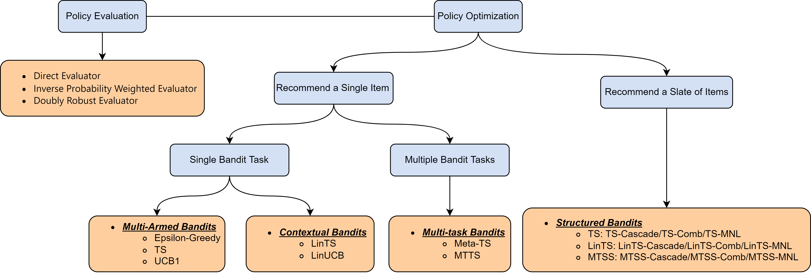

Overview#
Introduction#
What to expect?#
{kind=link}
Fig. 1 Workflow of the Causal Decision Making.#
The Fig 1 depicts the overall structure of this book, which is comprised of three primary components: Causal Structure Learning, Causal Policy Learning, and Causal Effect Learning. Specifically, in the chapter Causal Structure Learning (CSL), we present state-of-the-art techniques for learning the skeleton of causal relationships among input variables. When a causal structure is known, the second chapter Causal Effect Learning (CEL) introduces approaches for treatment effect identification, estimation and inference. Finally, the Causal Policy Learning (CPL) chapter introduces diverse policy learners to learn optimal policies and evaluate various policies of interest.
Following is a brief summary of the contents of each chapter.
Causal Structure Learning (CSL)#
The main goal of causal structure learning is to learn the unknown causal relationships among different variables.
{kind=link}
The classical causal structure learning methods can be categorized into three types.
{kind=link}
This chapter discusses three classicaltechniques for learning causal graphs, each with its own merits and downsides.
Learners Type |
Supported Model |
Noise Required for Training |
Complexity |
Scale-Free? |
Learners Example |
|---|---|---|---|---|---|
Testing based |
Models 1 |
Gaussian |
\(O(p^q)\) |
Yes |
PC |
Functional based |
Models 1 & 2 |
non-Gaussian |
\(O(p^3)\) |
Yes |
LiNGAM |
Score based |
Models 1 & 3 |
Gaussian/non-Gaussian |
\(O(p^3)\) |
No |
NOTEARS |
\(p\) is the number of nodes in \(\mathcal{G}\), and \(q\) is the max number of nodes adjacent to any nodes in \(\mathcal{G}\).
Causal Effect Learning (CEL)#
Causal effect learning, as weve mentioned at the beginning, aims to infer on the effect of a specific treatment in the context of causal inference. According to the data structure, we mainly divide the problem settings of CEL into three categories: independent states, Markovian state transition, and non-Markovian state transition.

Independent states, or Paradigm 1, denotes the single-stage setup where the full data can be summarized as a number of state-action-reward triplet with size \(n\), i.e. \((S_i,A_i,R_i)_{1\leq i\leq n}\). Due to the simplicity of data structure, there are quite a few methods proposed to handle the estimation of both average treatment effect and heterogeneous treatment effect, ranging from basic learners to deep-learning related approaches.
Markovian state transition, or Paradigm 2, denotes the case where the data contains \(T\) stages, i.e. \((S_{i,t},A_{i,t},R_{i,t})_{1\leq i\leq n,0\leq t\leq T}\), and the transition of stages follows a Markov decision process.
Non-Markovian state transition, or Paradigm 3, denotes other miscellaneous cases where the data have a relatively complex data structure, while the transition of stages doesnt follow the Markov assumption. In this section, we will mainly discuss some representative methods to deal with panel data.
Paradigm 1: I.I.D#
In Paradigm 1, we consider the standard case where all observations are i.i.d.. The full data of interest is \((S_i,A_i,R_i)\) where \(i\in\{1,\dots,N\}\).
{kind=link}
Paradigm 2: Markovian State Transition#
In Paradigm 2, the data we observed can be denoted as \((S_{i,t},A_{i,t},R_{i,t})_{1\leq i\leq n,0\leq t\leq T}\), where \(n\) is the number of trajectories, and \(T\) is the number of stages. This data structure is widely named as Markov decision processes (MDPs).
In causal effect learning, we focus on estimating the difference of the effect between a specific target policy (or treatment) and control at all stages. Due to the long-stage or even infinite-horizon structure of the data, most of the existing approaches paid attention to evaluating the expected reward of any given policy (treatment), and then do subtraction to obtain the effect of treatment versus control.
In observational data analysis, the data we obtained does not come from the target policy (or treatment) we wish to evaluate, resulting in the shift of data distribution. This problem is widely known as offline policy evaluation (OPE) under MDPs. The figure below depicts several groups of methods to address this problem.

Since this problem can be regarded as a special case of causal policy learning, we leave the detailed introduction of this part to Paradigm 2 of chapter 3 (Causal Policy Learning).
Paradigm 3: Panel Data#
In Paradigm 3, we consider the panel data where samples are measured over time. This type of data can be found in economics, social sciences, medicine and epidemiology, finance, and the physical sciences. The outcome of interest is defined as \(R_{i,t}\), which denotes the reward of observation \(i\) at time \(t\).
Consider a (either experimental or observational) study with \(N = m + n\) units and \(T = T_0 + T_1\) time periods in total. Without loss of generality, we assume that the first m units are treated units and the last n units are control units. Each unit \(i\) is associated with a \(d\)-dimensional time-invariant feature vector \(S_i\in \mathbb{R}^d\), and receives an unit-level outcome \(R_{i,t}\) at time \(t\). The full data structure is given below:
The current literature in dealing with panel data can be roughly divided into two categories: Difference-in-difference and synthetic control.

In general, DiD methods are applied in cases where we have a substantial number of units that are exposed to the policy, and researchers are willing to make a parallel trends assumption which implies that we can adequately control for selection effects by accounting for additive unit-specific and time-specific fixed effects. In contrast, synthetic control (SC) methods, introduced in a setting with only a single (or small number) of units exposed, seek to compensate for the lack of parallel trends by re-weighting units to match their pre-exposure trends. [2]
Causal Policy Learning (CPL)#
This chapter focuses on six common data dependence structures in decision making, including Fixed Policy with Independent States, Fixed Policy with Markovian State Transition, Fixed Policy with Non-Markovian State Transition, Adaptive Policy with Independent States, Adaptive Policy with Markovian State Transition, and Adaptive Policy with Non-Markovian State Transition. The similarities and differences between six paradigms are summarized as follows.

Paradigm 1: Fixed Policy with Independent States#
As the figure illustrated, observations in Paradigm 1 are i.i.d. sampled. For each observation, there are three components, \(S_i\) is the context information if there is any, \(A_i\) is the action taken, and \(R_i\) is the reward received. When there is contextual information, the action would be affected by the contextual information, while the final reward would be affected by both the contextual information and the action. A classical class of problems that are widely studied in this context is the Single-Stage Dynamic Treatment Regime (DTR)[1]. In this book, we mainly focus on methods for policy evaluation and policy optimization for Single-Stage DTR, with a detailed map in Appendix A
Paradigm 2: Fixed Policy with Markovian State Transition#
The Paradigm 2 is well-known as Markov Decision Process (MDP), whose main characteristic is the Markovian state transition. In particular, while \(A_t\) is only affected by \(S_t\), both \(R_t\) and \(S_{t+1}\) would be affected by \((S_t,A_t)\). Given \(S_{t}, A_t\), a standard assumption of MDP problems is that \(R_t\) and \(S_{t+1}\) are independent of previous observations. A list of related learning methods will be introduced, with a map in Appendix B.
<<<<<<< Updated upstream
Paradigm 3: Fixed Policy with Non-Markovian State Transition#
When a history-independent policy is applied, the Paradigm 3 takes all the possible causal relationships into account and is well-known as the multiple-stage DTR problem [1]. In this book, we introduce two classical learning methods, including Q-learning and A-learning (See a map in Appendix C)
Paradigm 4: Adaptive Policy with Independent States#
The Paradigm 4 setting is widely examined in the online decision making literature, especially the bandits, where the treatment policy is time-adaptive. Specifically, \(H_{t-1}\) includes all the previous observations up to time \(t-1\) (include observations at time \(t-1\)) and is used to update the action policy at time \(t\), and therefore affect the action \(A_t\). While \(S_t\) is i.i.d sampled from the correponding distribution, \(R_t\) is influenced by both \(A_t\) and \(S_t\). Finally, the new observation \((S_t,A_t,R_t)\), in conjunction with all previous observations, would then be formulated as \(H_{t+1}\) and affect \(A_{t+1}\) only. A structure that lacks contextual information \(S_t\) is also very common. In this book, a list of bandits algorithms would be introduced, with a detailed map in Appendix D.
Paradigm 5: Adaptive Policy with Markovian State Transition#
Building upon the MDP structure, when an adaptive policy is applied, the Paradigm 5 clearly depicts the data-generating process, in which \(S_t\) follows the Markovian state transition and \(A_t\) would be affected by all previous observations \(H_{t-1}\).#
Scenario 3: Fixed Policy with Non-Markovian State Transition#
When a history-independent policy is applied, the Scenario 3 takes all the possible causal relationships into account and is well-known as the multiple-stage DTR problem [1]. In this book, we introduce two classical learning methods, including Q-learning and A-learning (See a map in Appendix C)
Scenario 4: Adaptive Policy with Independent States#
The Scenario 4 setting is widely examined in the online decision making literature, where the data collection policy is adaptive to the data it has seen. Specifically, \(H_{t-1}\) includes all the previous observations up to time \(t-1\) (include observations at time \(t-1\)) and is used to update the action policy at time \(t\), and therefore affect the action \(A_t\). While \(S_t\) is i.i.d sampled from the correponding distribution, \(R_t\) is influenced by both \(A_t\) and \(S_t\). Finally, the new observation \((S_t,A_t,R_t)\), in conjunction with all previous observations, would then be formulated as \(H_{t+1}\) and affect \(A_{t+1}\) only. A structure that lacks contextual information \(S_t\) is also very common. In this book, a list of bandits algorithms would be introduced, with a detailed map in Appendix D.
Scenario 5: Adaptive Policy with Markovian State Transition#
Building upon the MDP structure, when an adaptive policy is applied, the Scenario 5 clearly depicts the data-generating process, in which \(S_t\) follows the Markovian state transition and \(A_t\) would be affected by all previous observations \(H_{t-1}\). This corresponds to the typical online RL setup.
Stashed changes
Paradigm 6: Adaptive Policy with Non-Markovian State Transition#
Extensions. Along the y-axis, we can further consider the case where the data collection policy depends on some unobservable variables, which correspond to the confounded problems.
Appendix#
A. Paradigm 1#
{kind=link}
Algorithm |
Treatment Type |
Outcome Type |
Single Stage? |
Multiple Stages? |
Infinite Horizon? |
Evaluation? |
Optimization? |
C.I.? |
Advantages |
|---|---|---|---|---|---|---|---|---|---|
Discrete |
Continuous (Mean) |
||||||||
Discrete |
Continuous (Mean) |
||||||||
Discrete |
Continuous (Mean) |
BOWL |
TODO |
||||||
Discrete |
Continuous (Quantiles) |
||||||||
Continuous |
Continuous/Discrete |
Flexible to implement & Fast to Converge |
|||||||
Kernel-Based Learner |
|||||||||
Outcome Learning |
B. Paradigm 2#
{kind=link}
C. Paradigm 3#
{kind=link}
Algorithm |
Treatment Type |
Outcome Type |
Evaluation? |
Optimization? |
C.I.? |
Advantages |
|---|---|---|---|---|---|---|
Discrete |
Continuous (Mean) |
|||||
Discrete |
Continuous (Mean) |
D. Paradigm 4#
{kind=link}
algorithm |
Reward |
with features? |
Advantage |
|---|---|---|---|
Multi-Armed Bandits |
|||
\(\epsilon\)-greedy |
Binary/Gaussian |
Simple |
|
Binary/Guaasian |
|||
Binary/Gaussian |
|||
Contextual Bandits |
|||
LinTS |
|||
LinUCB |
|||
Meta Bandits |
|||
Meta-TS |
|||
MTSS |
|||
Structured Bandits |
|||
Learning to Rank |
|||
Binary |
|||
Binary |
|||
Binary |
Scalable, Robust, accounts for inter-item heterogeneity |
||
Combinatorial Optimization |
|||
Continuous |
Scalable, Robust, accounts for inter-item heterogeneity |
||
Assortment Optimization |
|||
Binary |
|||
Binary |
|||
Binary |
Scalable, Robust, accounts for inter-item heterogeneity |
Reference#
[1] Tsiatis, A. A., Davidian, M., Holloway, S. T., & Laber, E. B. (2019). Dynamic treatment regimes: Statistical methods for precision medicine. Chapman and Hall/CRC.
[2] Dmitry Arkhangelsky, Susan Athey, David A Hirshberg, Guido W Imbens, and Stefan Wager. Synthetic difference in differences. Technical report, National Bureau of Economic Research, 2019.